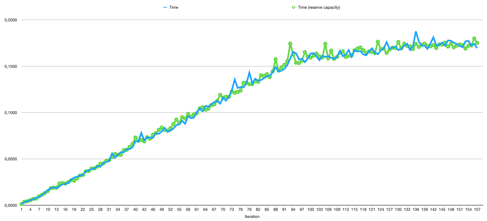

Published: March 24th, 2018.
Last updated: March 31st, 2018.
One of the more celebrated features of Swift 4 is the Codable protocol and the ability of the compiler to write code for us by automatic conformance to it. A lot of articles had been written about Codable:
and many mores.
In our case, we have an API that returns a series of objects, but instead of returning them as an array it returns a dictionary where the key is the id of the object, something like:
{ "id1": { "prop1": "value1", "prop2": 1 }, "id2": { "prop1": "value2", "prop2": 2 }}and we need to parse this JSON to our model object:
xxxxxxxxxxstruct APIObject { let id: String let prop1: String let prop2: Int}which evidently do not match the structure of the JSON response.
We can implement the encoding and decoding functions by our self, but of course, all our endpoints follow the same rule of returning a dictionary instead of an array, and doing this manually for each endpoint Codable pierde toda la gracias (lose all grace).
To take all the benefits of the automatic conformance of the Codable protocol we decided to implement a method to flat the server response before using JSONDecoder:
xfunc flat(data: Data) throws -> Data?{ guard let dict = try JSONSerialization.jsonObject(with: data) as? Dictionary<String, Dictionary<String, Any>> else { return nil } var dictionaries = [Dictionary<String, Any>]() for (key, value) in dict { var newValue = value newValue["id"] = key dictionaries.append(newValue) } return try? JSONSerialization.data(withJSONObject: dictionaries)}
The flat(data:) function takes the raw Data returned from the server and tries to cast it to a Dictionary, if the cast can not be performed we just return nil. If the conversion succeed we create an empty Array and iterate over all the elements in the dictionary, then we create a mutable copy of the value and set the id subscript to the value of the key, finally we pack the dictionaries, and that "works", and by "works" we meant that it is able to convert the dictionary to an array of objects. To process a response with 157 elements the function takes 17.5 seconds in average.
For now on when we talk about the time taken for a sentence or method to complete we mean that we do the following:
xxxxxxxxxxlet d = Date()// statement or function callprint(d.timeIntervalSinceNow)
We run a benchmark of the different statements in the function and we found that the time consuming task is the call to dictionaries.append(values), we thought that the issue was about memory reallocation, so we added a call to dictionaries.reserveCapacity(dict.keys.count) just after creating the dictionaries array, but this do not makes any difference. As shown in the next figure the time taken to append a new element to the array increased as we append more elements to the array.

The documentation of the Array.append(_:) method states:
Because arrays increase their allocated capacity using an exponential strategy, appending a single element to an array is an O(1) operation when averaged over many calls to the
append(_:)method. When an array has additional capacity and is not sharing its storage with another instance, appending an element is O(1). When an array needs to reallocate storage before appending or its storage is shared with another copy, appending is O(n), where n is the length of the array.
Until further exploration:
dictionaries array is not sharing its storage with any other objectcapacity property after the calling reserveCapacity(_:) returns 188, so we have enough room in the array to store all objectsfor that reasons the expected complexity is O(1), but it is evident that this is not true.
Instead of reserving enough memory to store all objects we created an array that already contains the number of elements we want and then replace them with the new values:
xxxxxxxxxxfunc flat(data: Data) throws -> Data?{ guard let dict = try JSONSerialization.jsonObject(with: data) as? Dictionary<String, Dictionary<String, Any>> else { return nil } var dictionaries = Array(dict.values) for (index, key) in dict.keys.enumerated() { if var value = dict[key] { value["id"] = key dictionaries[index] = value } } return try? JSONSerialization.data(withJSONObject: dictionaries)}
and this take 0.46 seconds in average to complete. The documentation of the subscript states:
Complexity: Reading an element from an array is O(1). Writing is O(1) unless the array’s storage is shared with another array, in which case writing is O(n), where n is the length of the array. If the array uses a bridged
NSArrayinstance as its storage, the efficiency is unspecified.
definitively in this case the complexity is O(1). If you are thinking that in this case it should be the opposite because the storage is shared with the dict variable, you are not right, the values property of the Dictionary object is defined as:
xxxxxxxxxxpublic var values: LazyMapCollection<[Key: Value], Value> { return self.lazy.map { $0.value }}so in this case the Array initialiser is creating a fresh storage. Also the statement Array(dict.values) is now the most time consuming operation we are running.
We know that for larger server responses creating an array in memory is not the solution and it can actually crash the app, but in our case this is not an issue.
Our goal now is to move the flat(data:) function from a Playground to an iOS project to be able to run Instruments on top of it and dig further on the initial code, we will share our findings with you.
Note: the values property have been declared as obsolete in Swift 4.1 and it is declared as:
public var values: Values { get { return Values(self) } set { self = Dictionary(_variantBuffer: newValue._variantBuffer) }}if this has any impact in the code is something we need to investigate too.
After updating to Xcode 9.3 and Swift 4.1 the worst scenario is reduced from the 17.5 to 4.5 seconds, which still is a very slow but definitively way better.
As promised, we also tested the code running inside an iOS project and all the performance issue disappear, here are the results:
| Device | Slow method (in seconds) | Fast method (in seconds) |
|---|---|---|
| iPhone X Simulator | 0.007 | 0.004 |
| iPhone 7 | 0.06 | 0.03 |
in all cases using Xcode 9.3 and Swift 4.1.